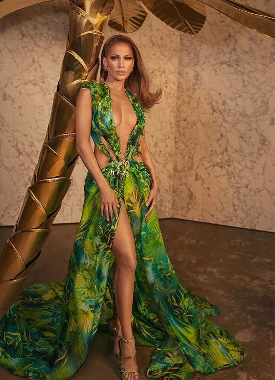
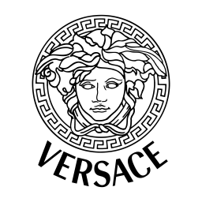

História da Versace
A marca Versace surgiu em 1978, através das ideias de Gianni Versace, um rapaz que ajudava a mãe, costureira, a confeccionar e ajustar roupas em uma cidade italiana chamada Reggio Calabria. Antes disso, em 1972, Gianni foi designado a desenhar uma coleção que seria produzida em Milão, a pedidos de uma confecção. A coleção foi sucesso absoluto, o que fez com que o estilista fosse chamado para criar mais peças para outras marcas.
Gianni Versace mudou-se para Milão, capital da moda italiana e mundial. Não demorou muito para que ele lançasse uma coleção para mulheres e outra para homens, começando, assim, a receber visibilidade e a se tornar um dos queridinhos da moda italiana. Dentre suas clientes famosas, estava a princesa Diana que, mesmo com seu estilo mais discreto, consumia as peças da marca e sabia que aquela era uma promessa da moda.
A marca Versace foi um fenômeno da moda nos anos 80 que se estendeu até hoje. À época, modelos famosas cresceram junto a marca, como Naomi Campbell, Claudia Schiffer e Cindy Crawford. Seus rostos estampavam catálogos de moda, enquanto se tornavam símbolos mundiais da beleza.
A marca registrada da grife
Após Donatella Versace ter assumido a marca, a identidade da mesma continuou seguindo seu já conhecido estilo ousado. Nas roupas, as mulheres podem notar recortes que destacam o corpo feminino.
Prova disso, é o vestido feito exclusivamente para a cantora Jennifer Lopez, chamado Jungle Dress. Com um decote profundo e um nó na altura do baixo ventre, o vestido mostra a silhueta, sem deixar a estampa de lado e exalando feminilidade.
Por conta disso, a marca conseguiu conquistar as mulheres de alta sociedade que buscavam por uma grife que trouxesse essa ousadia aos looks e que se diferenciasse um pouco do tradicional elegante que circulava na época em que foi lançada.
A Medusa como símbolo
Quem tem alguma peça da Versace, pode perceber que a Medusa está presente como logotipo, junto ao nome da marca. Segundo pessoas próximas à Gianni Versace, a ideia veio após sua visita a um palácio de Milão que depois foi comprado por ele onde ele viu sua imagem e se interessou, decidindo, assim, trazê-la para representar sua grife, já que ela representa tudo o que ele gostaria de passar: sensualidade, teatralidade e classe.
Assim como em suas roupas, a Versace também imprime seu estilo único e ousado em suas coleções de óculos de grau e óculos de sol. Os modelos costumam ser chamativos, elegantes e têm uma marca registrada: as laterais sempre são trabalhadas, com o logo da marca estampado.
Então é isso! Espero que você tenha gostado do nosso artigo com essa curiosidade sobre o sistema Android e seu simpático mascote.